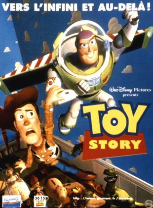
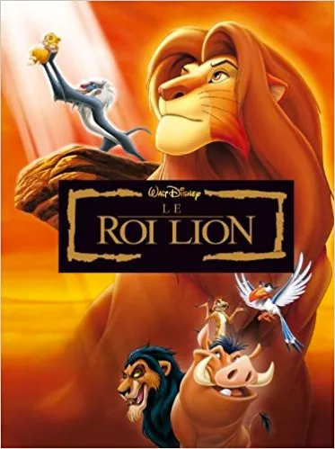

Quand le jeune Andy quitte sa chambre, ses jouets se mettent à mener leur propre vie sous la houlette de son pantin préféré, Woody le cow-boy. Andy ignore également que chaque anniversaire est une source d'angoisse pour ses jouets qui paniquent à l'idée d'être supplantés par un nouveau venu -- ce qui arrive quand Buzz l'Éclair est offert à Andy. Cet intrépide aventurier de l'espace, venu d'une lointaine galaxie, va semer la zizanie dans ce petit monde.

Un lionceau nommé Simba est exilé de son royaume après avoir été accusé d'être responsable de la mort de son père, Mufasa. Avec l'aide d'un étrange duo composé d'un suricate et d'un phacochère, il décide de reprendre ce qui lui revient de droit lorsqu'il apprend qu'il est destiné à être roi.